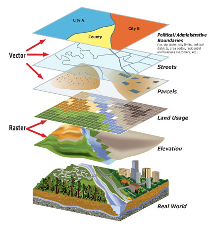

library(tidyverse)
library(geobr)
library(sf)- 1
- Carrega os pacotes dplyr, ggplot2, readr, entre outros
- 2
- Carrega o pacote geobr, para importar dados espaciais do Brasil
- 3
- Carrega o pacote sf, para manipulação de dados espaciais
Dados espaciais são dados que possuem uma localização geográfica associada, como coordenadas geográficas, endereços, códigos de municípios, entre outros.
A análise de dados espaciais é muito importante para diversas áreas, como planejamento urbano, planejamento ambiental, epidemiologia, entre outras.
Muitas vezes, são utilizados softwares point-and-click como o QGIS e o ArcGIS para análise de dados espaciais. No entanto, o R é uma ferramenta muito poderosa para análise de dados espaciais, pois podemos escrever scripts e reproduzir nossas análises, além de possuir diversos pacotes que facilitam a manipulação e visualização de dados geográficos.
Nesta aula, vamos apresentar uma introdução à manipulação de dados espaciais no R, utilizando o pacote {sf}. Além disso, também exploraremos o pacote {geobr}, produzido pela equipe do IPEA.
Vamos carregar os pacotes necessários para a aula:
library(tidyverse)
library(geobr)
library(sf)Atenção: dados espaciais são mais pesados que dados tabulares (ou seja, arquivos simples com linhas e colunas). Se você estiver utilizando um computador com pouca memória RAM, pode ser que tenha problemas ao importar bases de dados espaciais.
Também evite usar a função View() para visualizar bases de dados espaciais, pois isso pode travar o RStudio.
Os modelos de dados espaciais são uma forma de representar o mundo real em um ambiente computacional.
Existem dois tipos principais de dados espaciais: vetoriais e raster (chamados também de matriciais). Nesta aula, nos concentraremos em dados vetoriais, porém vamos apresentar uma breve introdução aos dados raster.

Os dados matriciais, ou raster, são uma forma de representar o mundo em uma grade contínua de células (ou uma matriz de células) de tamanho constante, onde cada célula possui um valor. Fazendo uma analogia, vamos imaginar um tabuleiro de xadrez, onde cada célula é uma unidade de informação, e cada célula tem um mesmo tamanho:

No exemplo acima, cada célula do tabuleiro de xadrez possui um valor 1 ou 0, porém quando falamos de dados raster, cada célula pode possuir um valor contínuo.
Este tipo de formato é muito utilizado para imagens de satélite, modelos digitais de elevação, e mapas de uso e cobertura da terra.
A ilustração abaixo nos ajuda a conectar o conceito de raster e imagens de satélite:

Existem diversos pacotes no R que permitem a manipulação de dados raster, como o {terra} e {stars}. No entanto, não abordaremos a manipulação de dados raster nesta aula.
Os dados vetoriais são representados por pontos, linhas e polígonos:
Pontos: representam um local específico no espaço, como uma coordenada geográfica. Por exemplo: um ponto de coleta de dados, a localização de uma escola.
Linhas: representam uma sequência de pontos conectados. Por exemplo: uma estrada, um rio.
Polígonos: representam uma delimitação de uma área. Por exemplo: um município, um estado, um país.
A imagem abaixo apresenta um exemplo de dados vetoriais, onde temos pontos, linhas e polígonos, representando o município de Osasco - SP:
{geobr} e DNIT.No R, podemos manipular dados vetoriais utilizando o pacote {sf}. Vamos explorar um pouco mais sobre esse pacote na próxima seção.
{sf}
O pacote {sf} (Simple Features for R) é um dos principais pacotes para manipulação de dados espaciais no R. Ele é um pacote que implementa classes e métodos para manipulação de dados espaciais, e é baseado no padrão Simple Features.
O pacote {sf} possui dependências que são instalados no computador (e não no R), e que podem ser um pouco complicadas de instalar para quem utiliza MacOS e Linux.
Observe que, ao carregar o pacote {sf}, uma mensagem é apresentada, com informações sobre as dependências:
library(sf)
# > Linking to GEOS 3.11.0, GDAL 3.5.3, PROJ 9.1.0;
# sf_use_s2() is TRUESe você tiver problemas para instalar, tente instalar o pacote diretamente do GitHub:
install.packages("remotes")
remotes::install_github(repo = "r-spatial/sf")remotes, que permite instalar pacotes diretamente do GitHub.
sf diretamente do GitHub.
Caso ainda tenha problemas, consulte as instruções de instalação na documentação oficial do pacote.
O pacote {sf} apresenta um novo tipo de classe: sf. A classe sf costuma estar associada a um objeto do tipo data.frame, onde uma das colunas é do tipo geometry, que armazena as informações espaciais (pontos, linhas ou polígonos).
Portanto, ao trabalhar com esse pacote, teremos tabelas similares a um data.frame, mas com uma coluna adicional que armazena as informações espaciais. A figura abaixo ajuda a ilustrar essa ideia:

Ao trabalhar com dados espaciais, é comum importar arquivos no formato shapefile (.shp), geopackage (.gpkg), GeoJSON, entre outros. Porém, em alguns casos, podemos ter dados espaciais em outros formatos, como um arquivo .csv que contém coordenadas geográficas (latitude e longitude).
Vamos explorar alguns exemplos de importação de dados espaciais utilizando o pacote {sf}.
Para importação de arquivos de dados espaciais, podemos utilizar a função st_read(). Esta função é capaz de ler diversos formatos de arquivos, como shapefile (.shp), geopackage (.gpkg), GeoJSON, entre outros.
Neste exemplo, vamos importar dados de rodovias do Distrito Federal, disponibilizados pelo DNIT1.
arquivo_dnit_df <- "https://github.com/ipeadata-lab/curso_r_intermediario_202501/raw/refs/heads/main/dados/shapefiles/dnit/dnit_df.gpkg"
rodovias_df <- read_sf(arquivo_dnit_df)Vamos explorar as colunas do objeto rodovias_df:
glimpse(rodovias_df)Rows: 128
Columns: 29
$ id_trecho_ <dbl> 151119, 151120, 151121, 151122, 151123, 151124, 151125, 151…
$ vl_br <chr> "010", "010", "010", "010", "010", "010", "010", "010", "01…
$ sg_uf <chr> "DF", "DF", "DF", "DF", "DF", "DF", "DF", "DF", "DF", "DF",…
$ nm_tipo_tr <chr> "Eixo Principal", "Eixo Principal", "Eixo Principal", "Eixo…
$ sg_tipo_tr <chr> "B", "B", "B", "B", "B", "B", "B", "B", "B", "B", "B", "B",…
$ desc_coinc <chr> "-", "-", "-", "-", "-", "-", "-", "-", "-", "-", "Coinc", …
$ vl_codigo <chr> "010BDF0010", "010BDF0015", "010BDF0016", "010BDF0018", "01…
$ ds_local_i <chr> "ENTR BR-020(A)/030(A)/450/DF-001 (BRASÍLIA)", "ENTR DF-440…
$ ds_local_f <chr> "ENTR DF-440", "ACESSO I SOBRADINHO", "ACESSO II SOBRADINHO…
$ vl_km_inic <dbl> 0.0, 2.4, 6.0, 8.3, 18.2, 22.0, 25.0, 34.0, 38.1, 42.7, 0.0…
$ vl_km_fina <dbl> 2.4, 6.0, 8.3, 18.2, 22.0, 25.0, 34.0, 38.1, 42.7, 45.0, 2.…
$ vl_extensa <dbl> 2.4, 3.6, 2.3, 9.9, 3.8, 3.0, 9.0, 4.1, 4.6, 2.3, 2.4, 3.6,…
$ ds_sup_fed <chr> "DUP", "DUP", "DUP", "DUP", "DUP", "DUP", "DUP", "PLA", "PL…
$ ds_obra <chr> NA, NA, NA, NA, NA, NA, NA, NA, NA, NA, NA, NA, NA, NA, NA,…
$ ul <chr> "Brasília", "Brasília", "Brasília", "Brasília", "Brasília",…
$ ds_coinc <chr> "010BDF0010;020BDF0010;030BDF0010", "010BDF0015;020BDF0015;…
$ ds_tipo_ad <chr> "Convênio Adm.Federal/Estadual", "Convênio Adm.Federal/Esta…
$ ds_ato_leg <chr> NA, NA, NA, NA, NA, NA, NA, NA, NA, NA, NA, NA, NA, NA, NA,…
$ est_coinc <chr> NA, NA, NA, NA, NA, NA, NA, "DF-345", "DF-345", "DF-345", N…
$ sup_est_co <chr> NA, NA, NA, NA, NA, NA, NA, "PAV", "PAV", "PAV", NA, NA, NA…
$ ds_jurisdi <chr> "Federal", "Federal", "Federal", "Federal", "Federal", "Fed…
$ ds_superfi <chr> "PAV", "PAV", "PAV", "PAV", "PAV", "PAV", "PAV", "PLA", "PL…
$ ds_legenda <chr> "Duplicada", "Duplicada", "Duplicada", "Duplicada", "Duplic…
$ sg_legenda <chr> "DUP", "DUP", "DUP", "DUP", "DUP", "DUP", "DUP", "PLA", "PL…
$ leg_multim <chr> "Duplicada Concessão/Convênio", "Duplicada Concessão/Convên…
$ versao_snv <chr> "202501A", "202501A", "202501A", "202501A", "202501A", "202…
$ id_versao <dbl> 78, 78, 78, 78, 78, 78, 78, 78, 78, 78, 78, 78, 78, 78, 78,…
$ marcador <chr> "|", "|", "|", "|", "|", "|", "|", "|", "|", "|", "|", "|",…
$ geom <LINESTRING [°]> LINESTRING (-47.85885 -15.6..., LINESTRING (-47.…Perceba que o objeto rodovias_df é um objeto do tipo sf, e possui informações sobre a geometria (tipo de geometria, dimensão, bounding box e sistema de referência de coordenadas):
rodovias_df
# Simple feature collection with 128 features and 28 fields
# Geometry type: LINESTRING
# Dimension: XY
# Bounding box: xmin: -48.25963 ymin: -16.05217 xmax: -47.3186 ymax: -15.50038
# Geodetic CRS: SIRGAS 2000O pacote ggplot2 apresenta a geometria geom_sf() para visualização de dados espaciais. Vamos visualizar no mapa o que foi importado:
ggplot() +
geom_sf(data = rodovias_df)
Neste exemplo, vamos utilizar um arquivo .csv que contém coordenadas de latitude e longitude, e então vamos transformar esses dados em um objeto do tipo sf.
Os dados que vamos utilizar são da base de dados de Classificação Nacional de Barragens de Mineração, disponiblizada pela Agência Nacional de Mineração (ANM).
caminho_arquivo <- "https://github.com/ipeadata-lab/curso_r_intermediario_202501/raw/refs/heads/main/dados/sigbm_20252118.csv"
dados_sigbm <- read_csv2(caminho_arquivo)Vamos visualizar as primeiras linhas do arquivo:
glimpse(dados_sigbm)Rows: 919
Columns: 23
$ Codigo <dbl> 9776, 8662, 8435, 8619,…
$ NomeBarragem <chr> "VALE GOLD", "0-1", "1 …
$ NomeEmpreendedor <chr> "VALE GOLD S.A.", "MINE…
$ CpfCnpjFormatado <chr> "38.615.413/0001-53", "…
$ LatitudeFormatada <chr> "-15°55'09.590\"", "-00…
$ LongitudeFormatada <chr> "-56°29'27.180\"", "-60…
$ CoordenadaSIRGAFormatado <chr> "Sul do Equador", "Sul …
$ Municipio <chr> "NOSSA SENHORA DO LIVRA…
$ UF <chr> "MT", "AM", "PA", "PA",…
$ Minerio <chr> NA, "Minério de Estanho…
$ Altura <dbl> 0.00, 19.60, 6.99, 7.59…
$ VolumeAtualFormatado <dbl> 0.00, 57463773.00, 1341…
$ MetodoConstrutivoFormatado <chr> "Indefinido", "0 - Etap…
$ CategoriaRisco <chr> "Baixo", "Alto", "Baixo…
$ DanoPotencial <chr> "Baixo", "Alto", "Baixo…
$ GestaoOperacional <chr> "N/A", "B", "N/A", "N/A…
$ InseridaPNSBFormatada <chr> "Não", "Sim", "Não", "N…
$ SituacaoNivelEmergencial <chr> "Sem emergência", "Níve…
$ SituacaoDeclaracaoCondicaoEstabilidade <chr> "-", "2º Campanha 2024 …
$ SituacaoDeclaracaoCondicaoEstabilidadeRPSB <chr> "-", "Não Atestado", "-…
$ SituacaoDeclaracaoConformidadeOperacionalidade <chr> "-", "Campanha 2024 - A…
$ SituacaoOperacionalFormatado <chr> "Em Construção", "Inati…
$ StatusEmbargo <chr> "Não Embargada", "Embar…Perceba que as colunas LatitudeFormatada e LongitudeFormatada estão no formato de texto, e não número.
Para transformar essas colunas em coordenadas geográficas, podemos utilizar funções do pacote {parzer}, para fazer o parse de coordenadas geográficas:
dados_sigbm_parzer <- dados_sigbm |>
mutate(
lat = parzer::parse_lat(LatitudeFormatada),
lon = parzer::parse_lon(LongitudeFormatada)
)
glimpse(dados_sigbm_parzer)Rows: 919
Columns: 25
$ Codigo <dbl> 9776, 8662, 8435, 8619,…
$ NomeBarragem <chr> "VALE GOLD", "0-1", "1 …
$ NomeEmpreendedor <chr> "VALE GOLD S.A.", "MINE…
$ CpfCnpjFormatado <chr> "38.615.413/0001-53", "…
$ LatitudeFormatada <chr> "-15°55'09.590\"", "-00…
$ LongitudeFormatada <chr> "-56°29'27.180\"", "-60…
$ CoordenadaSIRGAFormatado <chr> "Sul do Equador", "Sul …
$ Municipio <chr> "NOSSA SENHORA DO LIVRA…
$ UF <chr> "MT", "AM", "PA", "PA",…
$ Minerio <chr> NA, "Minério de Estanho…
$ Altura <dbl> 0.00, 19.60, 6.99, 7.59…
$ VolumeAtualFormatado <dbl> 0.00, 57463773.00, 1341…
$ MetodoConstrutivoFormatado <chr> "Indefinido", "0 - Etap…
$ CategoriaRisco <chr> "Baixo", "Alto", "Baixo…
$ DanoPotencial <chr> "Baixo", "Alto", "Baixo…
$ GestaoOperacional <chr> "N/A", "B", "N/A", "N/A…
$ InseridaPNSBFormatada <chr> "Não", "Sim", "Não", "N…
$ SituacaoNivelEmergencial <chr> "Sem emergência", "Níve…
$ SituacaoDeclaracaoCondicaoEstabilidade <chr> "-", "2º Campanha 2024 …
$ SituacaoDeclaracaoCondicaoEstabilidadeRPSB <chr> "-", "Não Atestado", "-…
$ SituacaoDeclaracaoConformidadeOperacionalidade <chr> "-", "Campanha 2024 - A…
$ SituacaoOperacionalFormatado <chr> "Em Construção", "Inati…
$ StatusEmbargo <chr> "Não Embargada", "Embar…
$ lat <dbl> -15.9193306, -0.7333611…
$ lon <dbl> -56.49088, -60.13839, -…Perceba que agora temos as colunas lat e lon no formato numérico, que representam as coordenadas geográficas. Com essas colunas, podemos criar um objeto do tipo sf, utilizando a função st_as_sf(), e informando nos argumentos: 1) coords o nome das colunas que representam as coordenadas geográficas; e 2) crs o sistema de referência de coordenadas (CRS, Coordinate Reference System).
dados_sigbm_sf <- st_as_sf(dados_sigbm_parzer,
coords = c("lon", "lat"),
crs = 4674)Observe a classe do objeto dados_sigbm_sf:
class(dados_sigbm_sf)[1] "sf" "tbl_df" "tbl" "data.frame"Ao transformar os dados em um objeto do tipo sf, o objeto apresentará informações sobre: tipo de geometria (ponto, linha, polígono), a dimensão, o bouding box (limites do quadrante onde nossos dados estão contidos), e o sistema de referência de coordenadas (CRS).
dados_sigbm_sf
# Simple feature collection with 919 features and 23 fields
# Geometry type: POINT
# Dimension: XY
# Bounding box: xmin: -63.62128 ymin: -30.91978 xmax: -36.29974 ymax: 2.321194
# Geodetic CRS: WGS 84Agora que temos um objeto do tipo sf, podemos visualizar esses dados em um mapa. Para isso, vamos utilizar a função geom_sf() do pacote {ggplot2}:
dados_sigbm_sf |>
ggplot() +
geom_sf() +
facet_wrap(vars(SituacaoNivelEmergencial))
{geobr}O pacote {geobr} disponibiliza funções para obter diversas bases de dados espaciais oficiais do Brasil. Este pacote está disponível para R e Python.
O pacote foi desenvolvido e é mantido pela equipe do Instituto de Pesquisa Econômica Aplicada (IPEA).
library(geobr)O pacote {geobr} possui diversas funções para baixar bases de dados espaciais do Brasil.
A função list_geobr() retorna uma tabela com informações sobre as bases de dados disponíveis no pacote:
| function | geography | source |
|---|---|---|
read_country |
Country | IBGE |
read_region |
Region | IBGE |
read_state |
States | IBGE |
read_meso_region |
Meso region | IBGE |
read_micro_region |
Micro region | IBGE |
read_intermediate_region |
Intermediate region | IBGE |
read_immediate_region |
Immediate region | IBGE |
read_municipality |
Municipality | IBGE |
read_municipal_seat |
Municipality seats (sedes municipais) | IBGE |
read_weighting_area |
Census weighting area (área de ponderação) | IBGE |
read_census_tract |
Census tract (setor censitário) | IBGE |
read_statistical_grid |
Statistical Grid of 200 x 200 meters | IBGE |
read_metro_area |
Metropolitan areas | IBGE |
read_urban_area |
Urban footprints | IBGE |
read_amazon |
Brazil’s Legal Amazon | MMA |
read_biomes |
Biomes | IBGE |
read_conservation_units |
Environmental Conservation Units | MMA |
read_disaster_risk_area |
Disaster risk areas | CEMADEN and IBGE |
read_indigenous_land |
Indigenous lands | FUNAI |
read_semiarid |
Semi Arid region | IBGE |
read_health_facilities |
Health facilities | CNES, DataSUS |
read_health_region |
Health regions and macro regions | DataSUS |
read_neighborhood |
Neighborhood limits | IBGE |
read_schools |
Schools | INEP |
read_comparable_areas |
Historically comparable municipalities, aka Áreas mínimas comparáveis (AMCs) | IBGE |
read_urban_concentrations |
Urban concentration areas (concentrações urbanas) | IBGE |
read_pop_arrangements |
Population arrangements (arranjos populacionais) | IBGE |
Em algumas funções, podemos passar argumentos para filtrar os dados que queremos baixar. Por exemplo, a função read_municipality() permite baixar a delimitação de um município específico, passando o código do IBGE do município como argumento.
Existe uma função no pacote {geobr}, chamada lookup_muni(), que permite buscar o código IBGE de um município pelo nome (ou também consultar o nome do município a partir de um código!). Por exemplo:
lookup_muni(name_muni = 'fortaleza')Using year/date 2010Returning results for municipality Fortaleza code_muni name_muni code_state name_state abbrev_state code_micro
949 2304400 Fortaleza 23 Ceará CE 23016
name_micro code_meso name_meso code_immediate
949 Fortaleza 2303 Metropolitana de Fortaleza 230001
name_immediate code_intermediate name_intermediate
949 Fortaleza 2301 Fortalezalookup_muni(code_muni = 4106902)Returning results for municipality Curitiba code_muni name_muni code_state name_state abbrev_state code_micro
4005 4106902 Curitiba 41 Paraná PR 41037
name_micro code_meso name_meso code_immediate
4005 Curitiba 4110 Metropolitana de Curitiba 410001
name_immediate code_intermediate name_intermediate
4005 Curitiba 4101 CuritibaVocê também pode consultar o código IBGE de um município no site do IBGE.

A seguir, estão as funções que apresentam a delimitação do Brasil, seus estados e municípios:
read_country(): Delimitação do Brasil.
read_state(): Delimitação dos estados do Brasil.
read_state("SP"): Delimitação de um estado específico, usando a sigla como argumento.
read_municipality(): Delimitação de todos os municípios do Brasil. É uma base pesada!
read_municipality(code_muni = 3550308): Delimitação de um município específico, usando o código do IBGE do município.
O pacote {geobr} faz o download das bases de dados. Isso significa que você precisa estar conectado à internet para baixar as bases de dados. Caso o servidor onde os dados estão armazenados esteja fora do ar, ou você esteja com problemas de conexão de internet, você não conseguirá baixar as bases de dados.
Uma sugestão é salvar os resultados em um arquivo após baixar os dados, para evitar ter que baixar novamente, com a função readr::write_rds(). Por exemplo:
estados_br <- read_state()
# Using year/date 2010
# Download status: 27 done; 0 in progress. Total size: 4.19 Mb (287%)... done! .rds:write_rds(estados_br, "dados/geobr/estados_br.rds")estados_br <- read_rds("dados/geobr/estados_br.rds")Com o objeto estados_br, podemos utilizar a função geom_sf() do pacote {ggplot2} para visualizar a delimitação dos estados brasileiros:
Mapas temáticos são mapas que representam um fenômeno geográfico, como a distribuição de uma variável em um território.
Para criar mapas temáticos, podemos utilizar a função geom_sf() do pacote {ggplot2}, e mapear uma variável para a cor de preenchimento (fill) ou cor do contorno (color) das geometrias.
Além disso, é comum utilizar mais que uma camada de informação no mapa, como a delimitação de estados, municípios, rodovias, entre outros.
Para explorar alguns conceitos úteis, vamos criar um mapa temático com a base de dados voos. Para isso, vamos importar a base de dados voos (utilizada em aulas anteriores):
voos <- read_csv2("dados/voos_dez-2024-alterado.csv")Vamos sumarizar os dados, e contar a quantidade de voos por estado de origem e destino:
dados_origem <- voos |>
count(sg_uf_origem) |>
rename(estado = sg_uf_origem, n_voos = n) |>
mutate(referencia = "Origem")
dados_destino <- voos |>
count(sg_uf_destino) |>
rename(estado = sg_uf_destino, n_voos = n) |>
mutate(referencia = "Destino")
base_contagem_voos_uf <- bind_rows(dados_origem,
dados_destino) |>
drop_na(estado)NA
Porém, para criar um mapa temático, precisamos de uma base de dados espaciais. Observe que não temos a coluna geometry na base de dados base_contagem_voos_uf:
glimpse(base_contagem_voos_uf)Rows: 54
Columns: 3
$ estado <chr> "AC", "AL", "AM", "AP", "BA", "CE", "DF", "ES", "GO", "MA",…
$ n_voos <int> 181, 962, 1643, 168, 3787, 1987, 4531, 1045, 1212, 607, 596…
$ referencia <chr> "Origem", "Origem", "Origem", "Origem", "Origem", "Origem",…Vamos utilizar a função read_state() do pacote {geobr} para obter a delimitação dos estados brasileiros, e então vamos fazer um join com a base de dados base_contagem_voos_uf:
estados_br <- read_state()dados_voos_unidos <- full_join(
estados_br,
base_contagem_voos_uf,
by = c("abbrev_state" = "estado")
)Para criar um mapa temático, vamos mapear a variável do número de voos para a cor de preenchimento das geometrias:
Criamos um mapa simples, porém podemos melhorar a visualização!
Muitas vezes, é interessante adaptar os dados para melhorar a visualização. Por exemplo, podemos criar categorias para a quantidade de voos, e mapear essas categorias para a cor de preenchimento das geometrias:
dados_voos_arrumados <- dados_voos_unidos |>
mutate(
referencia = factor(referencia, labels = c("Origem", "Destino")),
categoria_n_voos = cut(
n_voos,
breaks = c(0, 100, 500, 1000, 5000, 10000, 15000,
20000, 25000, Inf),
labels = c(
"0-100",
"101-500",
"501-1.000",
"1.001-5.000",
"5.001-10.000",
"10.001-15.000",
"15.001-20.000",
"20.001-25.000",
"25.001 ou mais"
)
)
) Com os dados arrumados, podemos criar um mapa mais interessante:
mapa_voos <- ggplot() +
geom_sf(data = dados_voos_arrumados, aes(fill = categoria_n_voos)) +
facet_wrap(vars(referencia)) +
theme_minimal() +
labs(title = "Quantidade de voos por estado, em Dezembro/2024",
fill = "Número de voos",
caption = "Dados obtidos com o pacote flightsbr do R.") +
theme(legend.position = "bottom",
axis.text.y = element_text(angle = 90)) +
scale_fill_viridis_d()
mapa_voosÉ possível ir além, e adicionar elementos como o Norte, a escala, entre outros. Para isso, podemos utilizar o pacote {ggspatial}:
mapa_voos +
ggspatial::annotation_scale() +
# Adiciona o Norte Geográfico
ggspatial::annotation_north_arrow(
location = "bl",
which_north = "true",
pad_x = unit(0.5, "cm"),
pad_y = unit(0.8, "cm"),
height = unit(1, "cm"),
width = unit(1, "cm")
)Scale on map varies by more than 10%, scale bar may be inaccurate
Scale on map varies by more than 10%, scale bar may be inaccurateNeste exemplo, exploramos elementos que te ajudarão a criar mapas temáticos com outros dados!
Utilizando objetos do tipo sf, vimos que é possível criar mapas estáticos com ggplot2.
No entanto, é possível criar visualizações interativas, com o pacote {mapview}.
Vamos criar um mapa interativo com a base de dados dados_sigbm_sf:
mapview::mapview(dados_sigbm_sf) Para visualizar grandes bases de dados espaciais, é interessante rodar a opção a seguir antes de criar o mapa. Para que isso funcione, é necessário ter o pacote leafgl instalado.
# install.packages("leafgl")
# Configura a opção
mapview::mapviewOptions(platform = 'leafgl')
# Visualiza o mapa
mapview::mapview(dados_sigbm_sf) O geoprocessamento permite realizar operações espaciais, como filtro, interseção e cálculo de distâncias entre objetos geográficos. O pacote {sf} oferece diversas funções para essas tarefas.
A cheatsheet (ou folha de cola) do pacote {sf} apresenta diversas as principais funções do pacote. Você pode acessar a cheatsheet neste link.

Essa área também é muito ampla, então vamos apresentar apenas algumas funções básicas do pacote {sf}.
Em alguns casos, como quando temos bases de dados muito grandes e limitação de memória RAM, podemos simplificar as geometrias, para reduzir a complexidade dos dados. A função st_simplify() permite simplificar geometrias, e é importante observar o argumento dToleranceque permite controlar o nível de generalização das unidades do mapa.
estados_br_simplificado <- st_simplify(estados_br,
dTolerance = 1000)
ggplot() +
geom_sf(data = estados_br_simplificado)Mas atenção: a simplificação pode alterar a forma das geometrias, então é importante tomar cuidado com o valor de dTolerance para não simplificar demais.
Caso o objetivo é fazer um filtro utilizando algum atributo que está na tabela, podemos utilizar a função filter() do pacote {dplyr}. Por exemplo, para filtrar os estados de Minas Gerais:
estado_mg <- estados_br |>
filter(abbrev_state == "MG")Porém, muitas vezes queremos fazer filtros com objetos espaciais. Neste caso, podemos utilizar funções do pacote {sf}.
O exemplo abaixo utiliza os dados de barragens de mineração no Brasil (dados_sigbm_sf), e filtra as barragens que estão localizadas no estado de Minas Gerais, utilizando a função st_filter():
sigbm_mg <- st_filter(dados_sigbm_sf, estado_mg)
ggplot() +
geom_sf(data = estado_mg) +
geom_sf(data = sigbm_mg)Perceba que a função st_filter() retorna um objeto do tipo sf. Essa função filtra as geometrias inteiras que têm algum ponto dentro da área de interesse. Se uma linha ou polígono tiver pelo menos um ponto dentro do município, ele será mantido inteiro. Portanto, essa função não modifica a geometria original, apenas faz um filtro.
Outra operação espacial muito comum é a interseção entre geometrias. A função st_intersection() permite retornar a interseção entre duas geometrias.
Para este exemplo, vamos carregar a base de dados de rodovias de São Paulo, disponibilizada pelo DNIT:
caminho_dnit_sp <- "https://github.com/ipeadata-lab/curso_r_intermediario_202501/raw/refs/heads/main/dados/shapefiles/dnit/dnit_sp.gpkg"
rodovias_sp <- read_sf(caminho_dnit_sp)Vamos também carregar o limite do município de Osasco:
municipio_osasco <- read_municipality(code_muni = 3534401)Vamos visualizar as geometrias:
E se a gente quiser saber quais rodovias estão dentro do município de Osasco? Podemos utilizar a função st_intersection():
intersection_rodovia_osasco <- st_intersection(rodovias_sp, municipio_osasco)Warning: attribute variables are assumed to be spatially constant throughout
all geometriesggplot() +
geom_sf(data = municipio_osasco, color = "red") +
geom_sf(data = intersection_rodovia_osasco) Essa função retorna apenas a parte da geometria que efetivamente cruza a outra. Se uma linha ou polígono estiver parcialmente dentro da área de interesse, ele será cortado na interseção. Essa função é útil quando se deseja manter apenas os trechos de linhas ou polígonos que estão dentro do limite espacial.
Caso você queira manter a geometria original, lembre-se que podemos usar a função st_filter(): ela mantém a geometria original, mas filtra as linhas ou polígonos que estão dentro da área de interesse.
A função st_area() permite calcular a área de uma geometria, e a função st_distance() permite calcular a distância entre duas geometrias.
Por exemplo, podemos calcular a área do polígono do município de Osasco:
area_municipio_osasco <- st_area(municipio_osasco)
area_municipio_osasco64927345 [m^2]Também podemos calcular a área de vários polígonos ao mesmo tempo, como os estados brasileiros. A função st_area() retorna um vetor com a área de cada polígono:
estados_br$area_estado_m2 <- st_area(estados_br)Por padrão, a função st_area() retorna a área em metros quadrados.
Também podemos calcular a distância entre dois pontos. Por exemplo, vamos calcular a distância entre as duas barragens com maior volume atual:
barragens_alto_volume <- sigbm_mg |>
slice_max(order_by = VolumeAtualFormatado, n = 2)
st_distance(barragens_alto_volume[1, ],
barragens_alto_volume[2, ], by_element = TRUE)4869.995 [m]Caso seja informado um conjunto de pontos, a função st_distance() retorna uma matriz de distâncias entre todos os pontos. Por exemplo:
matriz_de_distancias <- st_distance(head(sigbm_mg))
matriz_de_distanciasUnits: [m]
[,1] [,2] [,3] [,4] [,5] [,6]
[1,] 0.00 30233.203 35886.536 29202.3733 29437.6322 29192.1759
[2,] 30233.20 0.000 7528.096 2179.8944 1515.2508 1505.1275
[3,] 35886.54 7528.096 0.000 9656.9038 9019.0365 9033.1459
[4,] 29202.37 2179.894 9656.904 0.0000 670.7356 819.3557
[5,] 29437.63 1515.251 9019.037 670.7356 0.0000 313.2293
[6,] 29192.18 1505.127 9033.146 819.3557 313.2293 0.0000A análise de dados espaciais e o geoprocessamento são áreas muito amplas, e o objetivo desta aula foi apresentar uma introdução!
Nesta aula, aprendemos sobre o pacote {sf}, que é um dos principais pacotes para manipulação de dados espaciais no R. Vimos como importar dados espaciais, criar mapas temáticos, realizar geoprocessamento básico e visualização interativa.
{getSpatialData}, para obter dados raster.{terra} - Pacote para trabalhar com dados raster.{stars} - Spatiotemporal Arrays: Raster and Vector Datacubes - pacote para trabalhar com dados raster, especialmente com dados espaço-temporais.{parzer} - Pacote para ajudar a limpar coordenadas geográficas para o formato que o R entende.{sf} - Pacote para manipulação de dados espaciais.{geobr} - Pacote para baixar dados geográficos do Brasil.{leaflet} - Pacote para visualização interativa de mapas.{ggplot2} - Geometria geom_sf - Geometria específica para dados espaciais.{tmap} - Pacote para visualização de dados espaciais.Os dados originalmente são disponibilizados em .shp, com registros de rodovias para todo o Brasil. Porém os dados foram convertidos para o formato geopackage, e filtrados apenas para o DF, para deixar o arquivo mais leve e facilitar o exemplo. Caso queira acessar os dados originais, faça o download do arquivo .zip disponível no site do DNIT (em Rodovias -> Base georreferenciada), descompacte o arquivo e utilize o arquivo .shp para a leitura com a função read_sf().↩︎
{kind=link}
{kind=link}
{kind=link}
{kind=link}
{kind=link}
{kind=link}
{kind=link}
{kind=link}
{kind=link}
{kind=link}
{kind=link}
{kind=link}